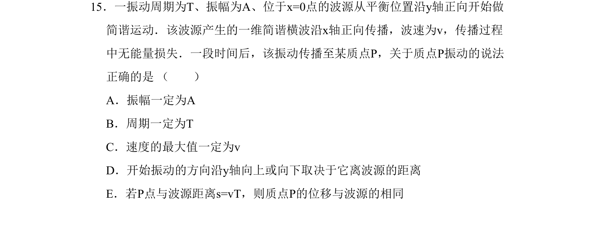
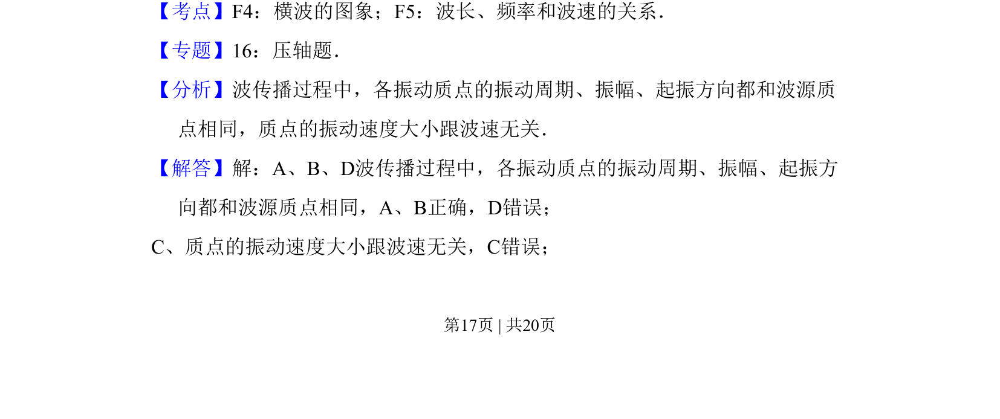
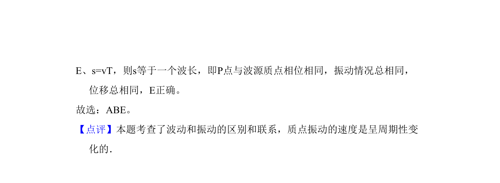

考点：简谐运动 横波 波长 频率和波速的关系

考查简谐横波传播中质点振动的振幅、周期、起振方向与波源的关系。


📄 原 PDF 第 17 页：
素材/真题/吉林/2008-2024·（吉林）物理高考真题/2011年高考物理试卷（新课标）（解析卷）.pdf
15．一振动周期为T、振幅为A、位于x=0点的波源从平衡位置沿y轴正向开始做 简谐运动．该波源产生的一维简谐横波沿x轴正向传播，波速为v，传播过程 中无能量损失．一段时间后，该振动传播至某质点P，关于质点P振动的说法 正确的是 （ ） A．振幅一定为A B．周期一定为T C．速度的最大值一定为v D．开始振动的方向沿y轴向上或向下取决于它离波源的距离 E．若P点与波源距离s=vT，则质点P的位移与波源的相同
【考点】F4：横波的图象；F5：波长、频率和波速的关系．菁优网版权所有 【专题】16：压轴题． 【分析】波传播过程中，各振动质点的振动周期、振幅、起振方向都和波源质 点相同，质点的振动速度大小跟波速无关． 【解答】解：A、B、D波传播过程中，各振动质点的振动周期、振幅、起振方 向都和波源质点相同，A、B正确，D错误； C、质点的振动速度大小跟波速无关，C错误；